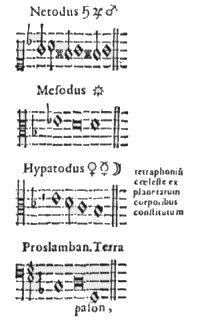
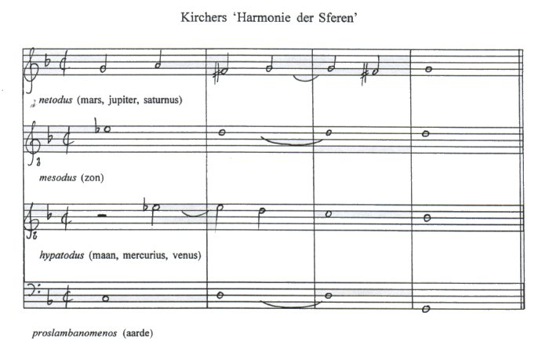

Inhoudsopgave
Liber X. Decachordon naturae Inhoudsopgave
Liber X. Decachordon naturae  Iter exstaticum
coeleste Iter exstaticum
coeleste
De musica mundana
Zoals uit het voorgaande duidelijk is geworden, behandelt
Kircher in het tweede hoofdstuk, het tweede ‘register’ van het
tiende boek, zijn opvattingen over de musica mundana. Kircher begint met
een lange en geleerde uiteenzetting van de meningen over de musica
mundana uit het verleden: Pythagoras, Plato, Cicero, Plinius, Macrobius,
Proclus, Chalcidius, Censorinus, Boethius, Seneca, Augustinus, de Bijbel, Philo
Iudeas, Quintillianus, Isidorus van Sevilla en tenslotte Anselmus van
Canterbury. Al dezen hebben hun mening over het wonderbaarlijke geluid dat de
hemelen voort zouden brengen naar voren gebracht en Kircher citeert hen, de een
meer uitgebreid dan de ander (zie voor een aantal van deze meningen ook
hoofdstuk 1).
In feite plaatst Kircher al deze citaten bij psalm 18 vs 2: Caeli enarrant
gloriam Dei et opus manus eius adnuntiat firmamentum (NBG 19:2: ‘De
hemelen vertellen Gods eer, en het uitspansel verkondigt het werk zijner
handen’, een vers dat Kircher niet nalaat te citeren(1); alle in dit gedeelte (II, p. 373-376) aanwezige citaten
onthullen meer of minder hoe de hemelen Gods eer vertellen.(2)
Van Augustinus horen wij dat ‘hij heeft gezegd dat deze wereld een lied
en een epigram is, waarin net zo veel stemmen en zaken zijn als antithesen, en
net zoveel strijd als er tegenstellingen zijn ...’ (Mundum hunc carmen
quoddam et epigramma dicit; in quo tot voces et res, quot antitheta; tot rerum
pugnae, quot contrarietates spectantur ....(3) - wederom wordt de verzoening der tegendelen naar voren
gebracht). Over Pythagoras horen wij opnieuw dat hij als eerste van de Grieken
met de geest de hemelse samenklank begreep en dat hij die samenklank met de
lier imiteerde. Cicero is aanwezig met ‘het zo grote en zoete
geluid’; Plato met de sirenen uit de mythe van Er. Boethius merkt op dat
de bewegingen in de hemel niet geluidloos kunnen zijn. Ook zijn Censorinus,
Plinius en Erastothenes aanwezig die opmerken dat de afstand van de aarde naar
de maan een hele toon is, van de maan naar mercurius een halve, totdat zij de
gehele toonladder genoemd hebben.
Kircher laat een heel koor van stemmen spreken over het
dulcissimum sonum, het ‘zoetste geluid’ waarmee de hemelen
Gods lof verkondigen. Als laatste echter, voordat hijzelf het woord weer neemt,
laat hij Anselmus van Canterbury aan het woord, die zegt:
‘De zeven banen van de hemellichamen wentelen zich met
de zoetste harmonie rond, en door hun omwenteling worden de meest lieflijke
samenklanken te weeg gebracht. Dit geluid reikt daarom niet tot onze oren,
omdat het boven de lucht ontstaat, en de omvang ervan ons beperkte gehoor te
boven gaat.’ (Septem coelorum orbes cum dulcissima harmonia voluuntur,
ac suavissimus concentus eorum circuitione efficiuntur. Qui sonus ideo ad aures
nostras non peruenit, qui ultra aerem fit, et eius magnitudo nostrum angustum
auditum excedit.(4))
Kircher sluit zich bij de mening van Anselmus aan:
hoewel de musica mundana bestaat, kan zij, omdat onze oren te nauw zijn
voor zulk een geweldig geluid en er geen lucht is in het wereldruim, toch niet
gehoord worden. De aanwezige, maar onhoorbare muziek heeft echter wel een
functie, namelijk als tempelmuziek in de tempel die God zich met deze wereld
schiep; want, zo merkt Kircher op, vanaf de oudheid her is deze wereld de
tempel van God geheten en zoals geen kerk zonder orgel of gezang is, zo is de
templum DEI eveneens niet zonder muziek.(5)
II
Na deze uiteentzettingen komt Kircher te spreken over de
structuur van het universum. Uitgebreid gaat hij hierbij in op de nieuwste
wetenschappelijke ontwikkelingen, met name op het heliocentrische credo van
Johannes Kepler, waarbij Kircher alle moeite doet om Keplers ideeën uit de
Harmonices Mundi te weerleggen(6). Iets wat, bij een oppervlakkige bestudering van Kepler,
inderdaad niet zo moeilijk is: zoals in hoofdstuk 3 bleek veroorlooft Kepler
zich met de getallen van de schijnbare extreme hoeksnelheden waaruit hij de
verschillende intervallen afleidt enige vrijheid (maar die vrijheden
verantwoordt hij in het negende hoofdstuk).
Juist dat punt, de schijnbare onnauwkeurigheid, de speling die Kepler zich
veroorlooft, snijdt Kircher aan. Het is voor Kircher dan ook niet moeilijk om
vast te stellen dat uit Keplers voorstellingen niet volgt dat er tertsen,
kwarten of anderszins in de bewegingen van de planeten aanwezig zijn.(7) Kirchers conclusie luidt dan ook:
‘Het is echter geenszins vernuftig enkel met de
verhoudingen te spelen, omdat er nauwelijks enige aan de getallen onderworpen
zaken zijn, die niet een of andere benoeming uit de muzikale proporties kunnen
hebben.’ (Ludere autem in sola proportione, nullius ingenii est, cum
vix vllae numeris subiectae res sint, quae non aliquas ex musicis
proportionibus denominationes habeant.8).
Na ‘deze ijdelheid’ van Kepler terzijde
geschoven te hebben, poogt Kircher de werkelijke constructie van de hemel te
tonen. Hierbij is een overeenkomst met Kepler aan te wijzen: ook Kircher
gelooft dat de verhoudingen (proportio) tussen de planeten hetzij door
hun grootte (... tum in mole ....(9)) hetzij door hun onderlinge afstanden ontstaan (...
tum in distantia eorundem ab invicem ....(10)). Maar, zoals Kircher opmerkt, deze aanname is zeer oud
en ook niet zonder reden: God heeft immers alles naar getal, gewicht en maat
geordend, die ordening is ook in de hemel aanwezig.(11)
Wel fundamenteel anders dan Keplers is het universum waarin
Kircher zich beweegt: hoe Kirchers universum gebouwd is kan het best getoond
worden aan de hand van de titelpagina van Iter exstaticum coeleste
(Würzburg, 1671 - zie ook tekst volgend deel en afbeelding 34). De
katholieke kerk had in 1633 Galileo Galilei, vanwege diens heliocentrische
leer, als ketter veroordeeld(12), en
ook Kepler nog bracht zijn ideeën voorzichtig naar voren. De leer die door
de katholieke kerk geaccepteerd werd, en door vele katholieke geleerden
ondersteund, was die van Tycho Brahe, waarin de aarde nog steeds het middelpunt
van het universum was, maar de planeten om de zon wentelden; dit geheel (dus
zon en planeten) wentelde om de aarde. Het is deze voorstelling van zaken die
op de titelpagina van Iter exstaticum coeleste wordt getoond: de aarde
met zijn begeleider maan en daaromheen (stippellijntje) zon en overige
planeten.
Kircher heeft aandacht voor zowel de grootte van de hemellichamen, als voor hun
onderlinge afstanden. Hij probeert(13) aan te tonen dat een bepaalde eenvoudige verhouding
zowel de afstanden als de grootte bepaalt. Daarnaast heeft hij ook aandacht
voor de omwentelingen (echter gezien vanaf de aarde)(14), maar hij verbindt niet, zoals Kepler dat doet, aan
deze berekeningen intervallen, toonreeksen of akkoorden. Kircher constateert
slechts dat men in de getallen een ‘schone harmonie’ kan zien, en
die verhoudingen, zo zegt hij, heeft God, de alwijze architect, in de gehele
wereld aangebracht.(15)
III
Toch is Kircher hiermee, met het nawijzen van de juiste
getallen en verhoudingen die de schepper aangebracht zou hebben niet tevreden,
want getallen kunnen eigenlijk geen verklaring zijn, omdat hetgeen de
samenklank van de hemellichamen is, niet verteld kan worden, maar alleen
bewonderd.
‘Dat er een bepaalde harmonische samenklank van de
hemellichamen is en zeker waardig voor die eeuwige Bestuurder en van een
oneindige zoetheid, wordt met algemene overeenstemming van zowel de heilige
schrift als alle theologen en filosofen aangenomen. Toch is het door de
getallen nauwelijks verklaarbaar, omdat de onverklaarbare samenklank van de
hemellichamen ‘noch door het oog gezien, noch door het oor gehoord, noch
in het hart des mensen is afgedaald’(16) ... Maar zoveel als de zwakheid van ons menselijk
verstand en verduisterde blik van onze geest kan opnemen, zou ik zeker willen
zeggen dat deze harmonie van de hemelen niet bestaat in de periodieke
bewegingsgetallen, en ook niet in die waarneembare indruk van de hemellichamen,
maar in niets anders dan in hun te bewonderen plaatsing en onuitsprekelijke,
samenwerkende verhouding in eenheid, waardoor deze wereld-lichamen zich zo
verhouden, dat als een losgelaten of veranderd wordt, de harmonie van het
geheel verloren gaat.’ (Esse harmonicum quendam coelestium corporum
concentum et quidem aeterno illo et infinitae suauitatis Harmostae dignissimum,
tum sacrarum litterarum, tum Theologorum, Philosophorumque omnium vnanimi
concensu receptum est, numeris tamen vix explicabilem, cum inenarrabilem illum
coelestium corporeum concentum oculus non viderit, nec auris audiuerit, nec in
cor hominis ascenderit, .... Quantum tamen humani ingenii nostri imbecillitas
et caliginosus mentis nostrae intuitus capere potest, dicerem profecto hanc
coelorum harmoniam non in periodicis motuum numeris, non in sensibili illa
coelestium corporum collisione, sed in nullo alio, nisi in admiranda eorundem
dispositione, et proportione quadam ineffabili in vnionem conspirante
consistere, qua corpora haec mundana ita sibi inuicem correspondent, vt sublato
aut mutato vno, merito harmonia totius pereat.17).
Volgens Kircher is de harmonie van de schepping slechts
ervaarbaar, niet kenbaar; het is meer een blijdschap verschaffende mystieke
beleving van de vele vormen en gebeurtenissen. God heeft alles zo geschapen,
dat alleen bewondering passend is; omdat het zijn schepping is, is alles dat is
ook noodzakelijk zo, zoals het is. Elke verandering zou slechts vermindering,
aantasting van de schepping betekenen. Daarom zijn de afstanden tussen de
verschillende hemellichamen precies goed: de zon dichterbij of verderweg zou
hitte of koude betekenen, de maan dichterbij of verderweg zou een nattere of
drogere aarde betekenen (Kircher houdt de maan verantwoordelijk voor de
waterhuishouding op aarde).(18)
Tussen maan en zon echter schiep de goddelijke voorzienigheid twee andere
planeten, namelijk venus en mercurius; dit omdat zon en maan alleen de harmonie
niet tot stand zouden kunnen brengen: de hitte van de zonnestralen en de
vochtigheid van de maan dienen op hun beurt weer getemperd te worden. Maar
omdat geen enkel orgel zo goed gestemd is, dat het niet in de loop der tijd
ontstemd kan raken, zo kan ook het wereld-orgel ontstemd raken; deze
ontstemming echter is door God voorzien, het is geen gebrek dat er, zoals ook
in de muziek, zowel consonanten als dissonanten aanwezig zijn, maar juist een
deugd van zijn schepping.(19)
Om een volkomen muziek te laten ontstaan schiep God mars en saturnus als
dissonanten en opdat de wereldharmonie hierdoor niet geheel zou ontsporen (want
de ‘pestveroorzakende dampen’ van mars en saturnus zijn de oorzaak
van alle kwaad op aarde) schiep God tussen mars en saturnus in de goedaardige
planeet jupiter (stella benigna), die deze twee enigzins in bedwang moet
houden; daarnaast heeft mars, vanwege zijn bijzondere giftige aard
(virulentia), een excentrische baan, zodat die giftigheid over de hele
hemel verdeeld wordt.(20)

afb. 35
‘Harmonie der Sferen' MU II, p. 383 | | De bouw van het universum
blijkt hieruit de volgende te zijn: ‘onder’ bevindt zich de aarde,
Kircher schrijft: ‘Hieruit blijkt dat de aarde als het ware het fundament
dus: de bas weergeeft, waarboven de overige harmonie van het universum
geplaatst is ...’ (Hinc patet Terram veluti basin quandam referre,
supra quam reliqua vniversi harmonia condita sit ....(21)). De aarde is de basis, hierop volgen maan, venus en
mercurius. De zon bevindt zich in het midden, deze is in feite de
‘koormeester’ (choragus(22)) die de andere planeten regeert en met zijn stralen in
harmonie brengt. Daarboven weer bevinden zich mars, jupiter en saturnus.
Uiteindelijk brengen deze overwegingen Kircher tot de gedachte dat de zeven
hemellichamen (maan, venus, mercurius, zon, mars, jupiter en saturnus) met de
aarde ‘een perfecte vierstemmigheid’ tot stand brengen, want de
dissonante planeten fungeren als siernoten: ‘Wat anders zijn mars en
jupiter dan dissonanten? Die echter door jupiter gebonden en gesyncopeerd in
perfecte overeenstemming, aan de muziek niet zozeer zoetheid, maar veeleer een
grote versiering verschaffen.’ (Quid enim Mars et Saturnus aliud sunt,
quam dissonantiae quaedam? quae tamen a Ioue consonantia perfecta syncopatae
ligataeque non dulcedinem tantum Musicae, sed et maximum ornamentum
conciliant.(23)). |
Hetzelfde geldt voor mercurius, ook deze is dissonant, maar
wordt door anderen getemperd. Opdat de nieuwsgierige lezer (lector
curiosus) zich deze vierstemmigheid kan voorstellen, geeft Kircher een
voorbeeld waarin hij zijn speculaties in muzieknoten heeft weergegeven, zie
onderstaand notenvoorbeeld (of afbeelding 35, het origineel uit MU.(24)):

De hoogste stem (sopraan) noemt Kircher netodus, deze
wordt door mars, jupiter en saturnus gezongen; de alt noemt hij mesodus,
deze zingt de zon (waarbij de zon consonant is met de aarde: octaaf en
duodecime, hetgeen Kircher met nadruk vermeldt); de tenor wordt gezongen door
maan, venus en mercurius, deze heet hypatodus; en tenslotte de bas door
de aarde (proslambanomenos).(25) Zo zit volgens Kircher de ‘meest perfecte
harmonie’ van de aarde met de planeten in elkaar. Opvallend is echter wel
Kirchers weergaven van hoe de planeten zingen: de dissonante planeten,
mercurius, mars en saturnus, zingen de dissonanten; betekent dit dat
bijvoorbeeld jupiter zwijgt wanneer de hypatodus inzet (tritonus!), of dat maan
en venus mercurius dwingen een d inplaats van een es te zingen (2de maat)?
Kircher schrijft namelijk (voor mars en satrurnus geldt iets dergelijks):
‘Venus, mercurius en maan zingen de hypatodon, de
consonante maan en venus binden de tussengelegen dissonant mercurius in de
maat, hem tot vriendschap brengend, zodat zij hem geheel en al tot samenklank
maken, zoals in de noten van de hypatodus te zien is.’ (Hypatodon vero
cantant Venus, Mercurius, Luna, et Venus quidem cum Luna consona Mercurium
intermedium dissonum in sui amicitiam trahentes ita harmonicis modulis
deuinciunt, vt eum prorsus consonum reddant, vti in notis hypatodi videre
est.(26)).
Nogal vreemd, het lijkt net alsof binnen de
afzonderlijke stemsoorten constant ‘ruzie’ heerst. Het
notenvoorbeeld bestaat uit een eenvoudige IV-V-I verbinding, maar opdat niet
steeds dezelfde harmonie aan de mundus inferiorus (de mens) wordt
aangeboden, is er een bepaalde afwisseling nodig. Op dit moment betrekt Kircher
astrologie in zijn verhaal, want enerzijds ontstaat de afwisseling door de
bewegingen van de planeten om hun as en langs hun baan (astronomie), anderzijds
spelen de posities die de planeten ten opzichte van de tekens van de dierenriem
innemen en de astrologische gevolgen hiervan nu een rol. Zo ontstaat er steeds
een andere harmonie.
De planeten dalen en stijgen binnen de diverse modi, bijvoorbeeld binnen
lydisch, maar zij kunnen ook van de ene naar de andere modus muteren (hetzelfde
zegt Kircher in Iter exstaticum coeleste, zie onder). In de musica
coelesti (zoals Kircher de muziek van de planeten hier noemt) gebeurt
derhalve hetzelfde als in de musica instrumentalis: con- en dissonanten
verbinden zich tot harmonie.(27)
IV
Met het voorgaande is de musica mundana nog niet
volledig behandeld, Kircher wijdt, naast een hoofdstuk aan ‘het koor der
koren, hetgeen de harmonie van de sterren in het firmament is’ ook drie
hoofdstukken aan drie andere ‘koren’, namelijk het ‘koor van
saturnus’, het ‘koor van jupiter’ en het ‘koor van zon
en mars’. Ik zal deze tot besluit behandelen.
In zijn bespreking van de koren van saturnus, jupiter, zon
en mars, voegt Kircher in feite weinig toe aan het al bekende. Hij begint met
de opmerking dat componisten altijd aangeraden wordt hun krachten over een
aantal koren te verdelen: zowel stemmen als de instrumenten moeten in een
aantal alternerende koren worden verdeeld, opdat de luisteraars meer varieteit
en plezier ondervinden. Vervolgens zegt hij dat de Bestuurder Natuur
(Harmosta Natura(28)) op
gelijke wijze de hemelse zangers (Phonasci Coelesti29) in verschillende koren verdeeld
heeft.
Deze verschillende koren nu bestaan uit planeet en zijn begeleiders.
Bijvoorbeeld die van saturnus (de pas ontdekte ringen gingen, vanwege hun
gebrekkige zichtbaarheid, door voor planeten(30)). Over die ontdekking merkt Kircher op dat het hem
lijkt alsof God het behaagde een nieuw register op het hemel-orgel open te
trekken. Na deze vaststelling besteedt Kircher enige aandacht aan de afstanden
tussen saturnus en zijn begeleiders, de omwentelingstijden en de afstand tussen
aarde en saturnus; al deze zaken zijn, volgens Kircher, door God harmonieus tot
stand gebracht.(31)
Ook jupiter heeft begeleiders, niet twee zoals saturnus, maar vier. Een
ontdekking die, zoals Kircher opmerkt, pas recentelijk was gedaan. Kircher
bespreekt hun onderlinge afstanden, weergegeven als aard-straal (de helft van
de diameter van de aarde) en ten tweede in diameters van jupiter; in deze
laatste nu vindt Kircher een bepaalde verhouding aanwezig: de afstanden tussen
de vier jupitermanen (weergegeven in diameters van jupiter) verhouden zich als
3:4:6:10. Ook over de grootte is iets bekend volgens Kircher, want de
dichtstbije aan jupiter is ongeveer even groot als de maan, de tweede als
mercurius, de derde als venus en de vierde als de maan.(32)
Nergens verbindt Kircher hier nog een bepaalde muzikale voorstelling aan
hetgeen hij beschrijft; op de enkele opmerking na dat God ‘in deze
wereld-tempel een zichtbaar koor met een aantal koorzangers heeft geplaatst,
namelijk de planeet die wij jupiter noemen’ (... constituit in hoc
mundano templo Chorum multiplici Choragorum potestate spectabilem, globum
videlicet coelestem, quem Iouem vocamus, ....(33)). Kircher vervolgt met de opmerking dat het de lezer
inmiddels duidelijk moet zijn dat alles harmonisch geordend is. Zoals
jupiter zijn koor heeft, zo heeft ook de zon zijn eigen koor, want: ‘het
koor van de zon of van Apollo heeft onder zich venus, mercurius maan en aarde,
en is vergelijkbaar met het koor van jupiter’ (Chorus Solaris siue
Apollineus sub se continet Venerem, Mercurium, Lunam, Terram, estque Iouiali
choro quasi parallelus, ....(34)). Maar, zo vervolgt Kircher, over hun harmonie is al
voldoende gezegd. De vijfde paragraaf van het tweede hoofdstuk handelt verder
over mars, aangezien deze nog niet aan de beurt is geweest. Mars is bijzonder
dissonant (ja zelfs ‘giftig’(35)), daarom heeft deze ook de meest excentrische baan,
namelijk tussen de koren van zon en jupiter door:
‘Omdat deze mars dissonant is met de overige, maar
toch nodig is om de harmonie van de wereld in stand te kunnen houden, is hij
midden tussen de consonerende koren van de zon en jupiter geplaatst, opdat hij,
als het ware vertragend en syncoperend, in hen de schoonste harmonie teweeg
brengt.’ (Hic cum esset reliquis dissonus, et tamen harmoniae mundi
conservandae necessarius, positus est inter chorum solarem Iouialemque
consonantes medius, vt iis veluti ligatus syncopatusque in pulcherrimam
harmoniam conspiraret.(36)).
Om deze syncopen een groter effect te laten sorteren heeft
mars die excentrische baan. Ook merkt Kircher op dat mars zijn eigen licht
produceert, door middel van vuren in zijn binnenste en hierdoor ontstaan tevens
de kwade dampen die zo’n grote invloed op aarde hebben; maar gelukkig is
mars tussen de andere koren geplaatst, zodat er uiteindelijk niets ernstigs
gebeurt.(37)
Als laatste zal ik nu de ‘harmonie van vaste sterren
in het firmament’(38)
behandelen. De sterren zijn het ‘koor der koren’ omdat zij, door
God daartoe geschapen, hem met ontelbare stemmen continu lofprijzen. De sterren
vormen als het ware de tutti-harmonie waartegen de planeten soleren:
‘Zoals in de verschillende verdeling van de koren een
uit verdienste het koor der koren wordt genoemd, waardoor, als het ware als
bron en maat, de schoonheid van de gehele harmonie in de anderen binnenstroomt,
zo ook heeft de bewonderenswaardige Aartskoormeester, God, bij de
planeten-koren het alleruitmuntendste koor gevoegd. Ik zeg dat het firmament
opeengehoopt is met een ontelbaar groot aantal sterren, als het ware met
evenzovele stemmen, die God continu lofprijzen.’ (Quemadmodum in varia
distributione Chororum, vnus merito chorus chororum dicitur, a quo ceu fonte et
mensura totius harmoniae decor in alios influit, ita admirabilis ille
Archichoragus DEVS planetariis choris, chorum apposuit eminentissimum;
firmamentum, inquam, innumerabili stellarum multitudine veluti totidem vocibus
DEVM continuo laudantibus refertum ....(39)).
Verdere directe verbanden met de (aardse) muziek worden
door Kircher in dit gedeelte niet aangebracht, slechts enkele astronomische
zaken en de theologische betekenis van hetgeen in het tweede hoofdstuk
behandeld wordt, krijgen in het vervolg Kirchers aandacht.
De sterren zijn niet, zoals Kircher opmerkt, wat men vroeger simpelweg dacht,
vaste cirkels, als het ware spijkers in een wiel geslagen, noch gaten zoals in
een zeef, waar het licht van het Empyreum doorheen schijnt, maar geweldig grote
bollen, die elk hun eigen plaats en beweging hebben.(40) Hun onbereikbare afstand echter is de oorzaak dat wij
noch hun beweging, noch hun grootte gewaar worden; evenmin worden de sterren
door de zon verlicht, maar wie hier meer van wil weten verwijst Kircher naar
een ander boek van hem: Ars magna lucis et umbrae. (Rome, 1646. 2
dl.).(41)
Met de behandeling van de astronomische kant van de zaak is Kircher vrij snel
klaar, om zich vervolgens over te geven aan speculaties omtrent wat toch de
reden is geweest voor God om zoveel sterren te scheppen? Kircher weet het niet,
hij zou het echter wel graag willen weten, maar, ‘wie heeft de zin des
Heren gekend? Of wie is Hem tot raadgever geweest?’ (Quis enim novit
sensum Domini aut quis Consiliarius eius fuit.(42)). Het doel dat God met de ontelbare sterren heeft, met
de gehele schepping heeft, is voor de mens verborgen. Het is voor de mens
voldoende te weten dat alles in één harmonie samenwerkt (...
sufficit nobis scire omnia in vnam harmoniam conspirare, ....(43)). Zeker is volgens Kircher ook dat
alles, zowel de Harmonie der Sferen alswel de wereld, omwille van de mens
geschapen is, opdat hij deze overdenkt en de oneindige macht, wijsheid en
goedheid van de schepper leert kennen.(44)
Hiermee wilde ik de behandeling van de musica
mundana, zoals deze uit de Musurgia Universalis naar voren komt,
beëindigen. In het volgende gedeelte zal ik wederom Kirchers ideeën
over de musica mundana behandelen, maar nu aan de hand van een ander
werk, namelijk Iter exstaticum coeleste, waarin Kircher een droom-reis
maakt door het heelal.
1. MU. II, p. 374
(terug naar tekst)
2. Maar
ook de oud-christelijke lofzang ‘Sanctus’ klinkt op de achtergrond
mee: ‘Sanctus, sanctus, sanctus Dominus Deus Sabaoth. Pleni sunt caeli
et terra gloria tua. ....’. Een lofzang gebruikt in de R.-K. liturgie
(aan het slot van de prefatio) en gebaseerd op Jesaja’s visioen in Jes
6:2. (terug naar tekst)
3.
Ibid., p. 373 (terug naar tekst)
4. Ibid., p. 376 (terug naar
tekst)
5. Ibid. (terug naar tekst)
6. Net zoals
Mersenne dat in Traité de l’harmonie universelle deed (vgl.
hoofdstuk 2), neemt Kircher bij deze weerlegging ook een aantal
vanKeplersafbeeldingen over: op (II) p. 376Keplersafbeelding van de sferen met
daarin weergegeven de vijf platonische lichamen (vgl. Harmonices mundi.
V, pp. 186-187/287), en op (II) p. 378 (enigzins
aangepast)Keplersplaneet-intervallen (HM. V, 198/301) en
planeet-toongeslachten (HM. V, 204/307). Zie ook afbeelding 41 (uit:
Mu. II, p. 378), Kirchers weergave vanKeplersintervallen/toongeslachten.
(terug naar tekst)
7. Zie
MU. II, pp. 377-379 (terug naar tekst)
8. Ibid., p. 379 (terug naar
tekst)
9. Ibid., p. 376 (terug naar tekst)
10.
Ibid. (terug naar tekst)
11. Ibid. (terug naar
tekst)
12. Het proces tegen Galilei werd
eerder gevoerd vanwege de zekerheid waarmee Galilei zijn opvattingen verdedigde
dan vanwege de aard van die opvattingen. Voor Galilei is de opvatting dat het
universum heliocentrisch is geen hypothese meer, het is werkelijkheid.
Copernicus echter had zijn heliocentrische theorie bijna een eeuw eerder
verkondigd (De Revolutionibus Orbium Coelestium. 1543), zonder ooit
problemen te ondervinden, maar dit kwam omdat zijn theorie als hypothese werd
voorgesteld en niet als feitelijkheid. Overigens, het voorwoord bij De
Revolutionibus, waarin gesteld werd dat het werk een hypothetisch karakter
zou hebben, is niet van Copernicus zelf, maar van de (lutherse) theoloog
Osiander die hierom later in hoge mate gekritiseerd werd. Zie ook E.J.
Dijksterhuis, De Mechanisering van het Wereldbeeld. pp. 328-329; of
Alexandre Koyré, The Astronomical Revolution. p. 34 e.v.
(hoofdstuk 3: ‘De Revolutionibus Orbium Coelestium,
Osiander’s Preface and the letter to Pope Paul III’) (terug naar tekst)
13. Kircher
gebruikt hierbij de berekeningen van Maria Antonius Rheitica (Oculus Enoch
et Elia, sive radius sidereo-mysticus planetarum, veros motus solo excentrico
tradens (cet.). Antwerpen, Hieronymus Verdussen, 1645 (2 tom. 1 vol.). Zie
MU. II, pp. 379-381 (terug naar
tekst)
14. Ibid. (terug naar tekst)
15.
Ibid., p. 381 (terug naar tekst)
16. I Cor. 2:9. Geciteerd naar: Joscelyn Godwin, The
Harmonies of the Spheres. A Sourcebook of the Pythagorean Tradition in
Music. Rochester (Vermont), Inner Traditions International, 1993. In dit
werk bevindt zich tevens een vertaling van een gedeelte van MU.
namelijk: II, pp. 203-205, 370-373, 381-388, en 458-461. (terug naar tekst)
17.
MU. II, p. 381 (terug naar tekst)
18. bid., p. 382. Maar zie ook Ulf Scharlau,
Athanasius Kircher. p. 122 (terug naar
tekst)
19. MU. II, p. 383 (terug naar tekst)
20.
Ibid. Ook vergelijkt Kircher hier de mundus maioris met haar
‘gezonde’ en ‘zieke’ planeten met het menselijk lichaam
en de kwalen daarvan. (terug naar tekst)
21. MU. II, p. 384 (terug naar
tekst)
22. Ibid., p. 381 (terug naar tekst)
23.
Ibid., p. 383 (terug naar tekst)
24. Ibid. De alt (hypatodus) bevat een drukfout, er
staat een des aangetekend, maar dit kan, gezien de harmonie, nooit het geval
zijn, dit moet een es zijn, zie de afbeelding. (terug
naar tekst)
25. MU. II, pp. 383-384. De
namen netodus, mesodus en hypatodus zijn afgeleid van de
Griekse notennamen nêtê, mesê en hypatê, die met de
proslambanomenos (de allerlaagste noot) de centrale noten uit het Griekse
toonsysteem vormen. Mogelijk is ook hier een verband met de tetraktys (en
daarmee met alle daaraan verbonden analogieën) aanwezig, want de
verhoudingen tussen hypatê (grondtoon), mesê (kwart), (niet door
Kircher genoemd: paramesê - kwint) en nêtê (octaaf) worden
uit de tetraktys afgeleid. Zie hoofdstuk 1 (o.a. noot 12). (terug naar tekst)
26.
MU. II, p. 384 (terug naar tekst)
27. Ibid. (terug naar
tekst)
28. Ibid. (terug naar tekst)
29.
Ibid. (terug naar tekst)
30. Kircher noemt hier de Lyncea Astronomorum schola,
dit is de ‘Accademia dei Linceii’, gesticht in 1603, waartoe ook
Galilei behoorde. Zie Joscelyn Godwin, Harmonies. p. 460 (noot 18)
(terug naar tekst)
31.
MU. II, pp. 384-385 (terug naar
tekst)
32. MU. II, pp. 386-387 (terug naar tekst)
33.
Ibid., p. 387 (terug naar tekst)
34. Ibid., p. 388 (terug naar
tekst)
35. Kircher geeft hiervoor niet met
zoveel woorden de reden, volgens mij is er een tweeledige: enerzijds gaf mars
de astronomen de grootste moeite bij hun verklaringen, berucht in deze zin is
bijvoorbeeld de retrograde beweging die mars schijnt te maken (zie hoofdstuk
1). Zo heeft Johannes Kepler over de oplossing van ‘het probleem
mars’ vele jaren gedaan. Daarnaast is mars in de astrologie eveneens
problematisch, veroorzaker van allerlei ellende - bekend is ook mars (Ares) als
oorlogsgod/planeet. (terug naar tekst)
36. MU. II, p. 388 (terug naar
tekst)
37. Ibid. (terug naar tekst)
38. De
Choro Chororum, id est, de harmonia stellarum fixarum in firmamento.
Paragraaf 6 (de laatste) van het tweede hoofdstuk. MU. II, pp. 388-390
(terug naar tekst)
39.
MU. II, p. 388 (terug naar tekst)
40. Ibid.
41. Ibid. p. 389 (terug naar
tekst)
42. Ibid., p. 389; naar:
Romeinen 11:34 of Jesaja 40:13 (terug naar
tekst)
43. Ibid. (terug naar tekst)
44.
Ibid., p. 390 (terug naar tekst)
|